1. Aircraft structure & Aerodynamic limits
SYSTEM DESIGN, LOADS, STRESSES
AIRCRAFT STRUCTURAL DESIGN PHILOSOPHY
· Aircraft structural design involves three main design philosophies
- Safe life. A component is replaced after a certain and defined usage.
- Fail safe. More than one component sustain a load. In case of failure, other components can absorb the load.
- Damage tolerant. Components are designed thicker and stronger than needed. If they suffer deterioration, they still have the necessary strength to cope with the load.
· Redundancy on system design
- Redundancy is a system design in which a component is duplicated so if it fails there will be a backup
- For example, aircraft are generally equipped with several hydraulic systems, as well as electrical and pneumatic systems so that failure of a single system will not lead to loss of the whole system.
STRESS
· Stress and strain
- Stress. The internal force per unit area inside a structural part as a result of external load.
- Strain. The deformation caused by the action of stress on a material.
- It is normally given as the change in dimension expressed in a percentage of the original dimensions of the object.
STRUCTURAL LOADS
· Major structural stresses
| 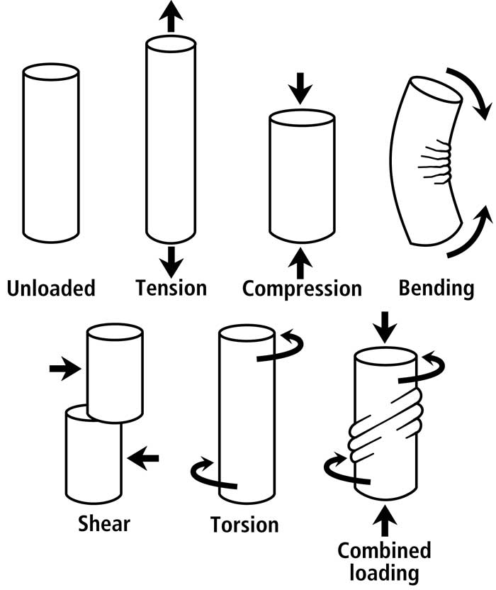 |
· Load definitions
- Static loads. A mechanical force that doesn't change over time, but remains constant.
- Dynamic loads. Any force that changes over time.
- Cyclic loads. A force that is applied, removed, and reapplied in a relatively rapid and repetitive form.
· Tensile strength
- The maximum tension that a material can support before its cross-sectional area gets too thin and it breaks.
· Areas typically prone to stress
- Load-bearing internal structural elements
- Load-bearing external aircraft skins
- Components moving at high speed
- Areas around the edges of fastener holes, rivets, bolts, screws, or any other areas of concentrated stress
· Deformation terminology
- Elastic deformation. Refers to a temporary deformation of a material's shape that is self-reversing after removing the force or load.
- Elasticity is the property of a material to revert to its original shape once a load is gone.
- Plastic deformation. A permanent distortion that occurs when a material is subjected to tensile, compressive, bending, or torsion stresses that exceed its yield strength and cause it to elongate, compress, buckle, bend, or twist.
FATIGUE AND CORROSION
FATIGUE
· What is fatigue?
- Structural fatigue is the progressive and localized structural damage that occurs when a material is subjected to cyclic loading.
- Once a fatigue crack has initiated, it grows a small amount with each loading cycle
CORROSION
· What is corrosion?
- Corrosion is a natural process that converts a refined metal into a more chemically stable oxide
- There are two main types of corrosion:
- Oxidation
- Electrolytic corrosion
MAINTENANCE
AIRCRAFT MAINTENANCE
· Maintenance philosophies
- Aircraft Design Lifespan. When a component, such as the fuselage, is restricted to a certain number of uses or cycles.
- Hard time maintenance. Also known as Failure Preventive Maintenance. Inspection is dictated by the number of flight hours.
- On condition maintenance. Sensors are fitted to the aircraft. If they detect excessive values, systems will be examined or repaired.
AIRFRAME
STRUCTURE ATTACHMENT
· Attachment methods
- Riveting. Placing a rivet in a hole.
- Bolting. They can use wire locking to avoid unintended movement caused by vibration.
- Welding. Two metals are fused to become one. Allows load to be spread over a wire area.
- Pinning. A pin is inserted through 2 components. Easy to undo.
- Adhesives. Chemicals that react upon contact with air.
STRUCTURE MATERIALS· Aircraft structural materials
| 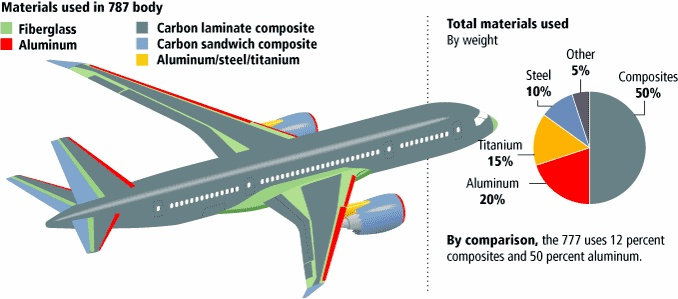
|
AIRCRAFT STRUCTURAL MEMBERS AND COMPONENTS
· Basic structural members
- Beams: They withstand bending loads. Two types of beams:
- "Simply supported" if attached at both sides
- "Cantilever" if attached at one side only.
- Struts: They withstand compressive loads.
- Ties. They withstand tensile loads.
· Other structural components
- Fuselage
- Truss. Old aircraft structure. Covered with a skin to reduce friction. Low weight but very low strength. Generally not used nowadays.
- Monocoque. Load is supported by the skin. It is made of skin and former rings. Can suffer stress from tension. Because skin absorbs all the loads, it has to be think enough.
- Semi-monocoque. Most used type. Has frames (rings), longerons and stringers. Bulkhead limits the pressurized area.
- Wings
- Semi-monocoque usually. Made of spars, stringers and ribs with hollows to reduce weight
- Must make room for fuel tanks.
- Can be cantilever or non-cantilever.
- Tail section
- Semi-monocoque usually. Like the wing, made of spars, strings and ribs with hollows to reduce weight.
AIRCRAFT STRUCTURE CONSTRUCTION
· Structure construction types
| 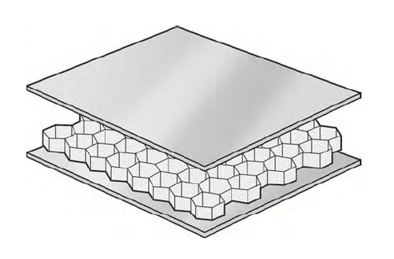Sandwich construction with honeycomb core |
DESIGN OF WINDOWS AND DOORS
· Window construction
- Passenger windows: Glass layers with a gap of air through them.
- Cockpit windows: Glass layers with vinyl between them to absorb impacts, as well as a heating layer to avoid fogging.
· Doors and hatches
- When opening doors, first movement must be done inwards in order to impede doors from being opened mid-flight. This is called pressure seal.
- In a hatching mechanism, hatches are located at the front edge of the door. If door-locking mechanism fails, airflow with prevent the door from opening mid-flight
AERODYNAMIC LIMITS
LOAD LIMITING
· Definitions of load limits
- DLL (Design Limit Load). This is the maximum load to be achieved during flight.
- DUL (Design Ultimate Load). This is the maximum load that a structure can stand without collapsing. Note that material can take damage before reaching DUL.
- DUL = DLL * Safety Factor
- This safety factor is usually 1.5
FAILURE CLASSIFICATION
| Classification of failure | Probability | Effect on aircraft | Effect on passengers | Effect on flight crew |
| None | Frequent | No effect on operational capabilities or safety margin | Inconvenience | None |
| Minor | Reasonably probable 10-3 per flight hour | Slight reduction in operational capabilities | Physical discomfort | Slight increase in workload |
| Major | Remote 30-5 per flight hour | Significant reduction in operational capabilities or safety margin | Physical distress, possibly including injuries | Physical discomfort or a significant increase in workload |
| Hazardous | Extremely remote 10-7 per flight hour | Large reduction in operational capabilities or safety margin | Serious or fatal injury to a small number of occupants | Physical distress or excessive workload impairing ability to perform tasks |
| Catastrophic | Extremely improbable 10-9 per flight hour | Safe flight and landing prevented, usually with loss of aircraft | Multiple fatalities | Fatalities or incapacitation |
2. Hydraulic Systems
PRINCIPLES
· Basic principle
- Without hydraulics, the force required to move flight controls would be too much for humans.
- Force / Area = Pressure
- Pressure is maintained constant throughout a hydraulic circuit.
- Therefore, we can control the amount of force delivered to an actuator by controlling its size
· Advantages of hydraulic systems
- Increased controllability, since we can produce big forces on flight control panels
- Simple
- Flexible
· Disadvantages of hydraulic systems
- Loss of system if a leak occurs
- Maintenance costs
- Design and production costs
- Can be dangerous for staff working around an airplane if inadvertently moved
· Passive vs active systems.
- Passive: Pressure is created by a manually pushed piston.
- Active: Fluid flows by a means of pumps, and a circuit is constantly pressurized.
· Open vs Closed Centre Systems
- Open Centre Systems (Constant flow)
- Hydraulic consumers are in series
- Hydraulic fluid continuously flows throughout the circuit
- A solenoid directs the flow to operate an actuator or bypass it
- In short, constant flow, variable pressure.
- Closed Centre Systems (Constant pressure)
- System varies flow to maintain a constant pressure
· Typical hydraulic circuit pressure is around 3000 psi (2000 - 5000 psi range)
HYDRAULIC FLUIDS
· Desirable properties of a hydraulic fluid
- Incompressibility
- Low viscosity
- Good lubrication
- They must remain liquid at a wide range of temperatures
- Resistant to high temperatures
- Not flammable
- They must prevent corrosion
· Types of hydraulic fluids
- Mineral based fluid: Good lubrication, coloured red. Must be used with synthetic rubber seals and hoses.
- Synthetic fluid: Less prone to cavitation. Reduced fire risk. They can withstand higher temperatures. Commonly used and known as "skydrol". Can be light purple, green or amber. Low toxicity with skin, painful if contact with eyes.
- Note: These types can not be mixed.
· Irritation
- Hydraulic fluids are irritating for skin and eyes
- If in contact with hydraulic fluid, wash with copious amount of water and don't use soak initially.
HYDRAULIC SYSTEM COMPONENTS
· Reservoirs
- They fluid and serve as a vessel which allows for expansion and fluid storage.
- Can be checked using a dipstick or through a transparent sight glass.
- Fitted with a strainer to prevent dirt from entering the system.
- Generally pressurized using bleed air from the engines, to prevent cavitation.
- Fitted with a stack pipe to provide emergency liquid supply.
· Pumps
- Pumps pressurize the hydraulic system
- Can be powered manually, through an engine gearbox, electrically, hydraulically or by pneumatic air.
- Two main categories
- Constant delivery (fixed volume)
- Manual pumps, gear or piston pumps belong to this category
- They require an ACOV (Automated Cut-Off Valve) to prevent over-pressure: If pressure exceeds circuit-designed pressure, a portion of the displaced volume is removed from hydraulic circuit and sent back to reservoir, reducing pressure.
- Cut-in position: Pump output remains on hydraulic line
- Cut-out position. Pump output goes back to reservoir. This allows constant flow for lubrication even when there are no hydraulic demands.
- Constant pressure (variable volume)
- Generally used in modern aircraft. Automatically controlled
- A swashplate is used to control the amount of fluid entering the system, according to pressure demands
- The angle of the swashplate is controlled by a pressure-sensitive piston
- Constant delivery (fixed volume)
· Accumulators
- They store pressurized hydraulic fluid on one side, gas on the other side acting as a spring. Pressure is measured through a gauge.
- They can supply pressurized fluid upon pump failure
- They also absorb fluctuations in case of pressure variations
- Example: emergency braking is generally provided by an accumulator that can actuate brakes up to a given amount of times.
· Selector valves
- Rotary: lines that can be rotated 90º to choose where the hydraulic pressure goes to. They can also hydrolock the system if completely closed.
- Linear. push / pull movement, directing the liquid flow to one side or another.
· Filters
- They remove contamination from liquid
- Usually located in suction line (before pump), pressure line (after pump) and return line (before reservoir)
- Bypass valves are fitted to prevent blocking the lines in case of clogging.
· Actuators
- They convert hydraulic power into physical movement.
- Two types according to the movement created:
- Linear actuators (pistons)
- Can be single-acting (hydraulic actuation in one direction only) or double-acting (both directions)
- Double acting actuators are known as balanced if they have the same area on both sides of piston. This can be achieved by using a dummy ram
- Rotary actuators (motors)
- Linear actuators (pistons)
VALVES
· Flow control valves
- They limit and direct hydraulic flow throughout the system.
- Non-return valve: Only allows flow in one direction.
- Restrictor valve: Limits the quantity of liquid in one direction.
- Selector valve: Controls flow in and out of actuators. Can be rotary of linear.
- Shuttle valve allows for alternative pressure source to be used in cause of fault on the primary source.
- Sequence valves ensure an operation is complete before starting another. Can be either mechanical, electrical or hydraulic.
- Hydraulic fuses protect complete loss of fluid during leaks.
· Pressure control valves
- They maintain or limit pressure in various parts of the circuit.
- Pressure relief valves: used to protect system from excessive pressure.
- Thermal relief: so called if in lines with hydraulic lock, where temperature increase can make fluid expand and increase pressure 10% above expected.
- Pressure maintaining or priority valve: If pressure is insufficient, it sends fluid only to primary services.
- Pressure reducing valve: for sub-systems that operate at lower pressure.
OTHER COMPONENTS
· Power Transfer Unit (PTU)
- A common shaft links two hydraulic systems
- Each end can work as a pump or as a motor
- When a hydraulic system fails, the remaining system can pressurize both systems through the PTU
- Note that they only transfer power, but not fluid.
· Electric pumps
- Used to pressurize a hydraulic system without need for engine rotation
· Ram air turbine (RAT)
- A turbine that extends beneath the aircraft, then being turned by impact airflow
- The RAT acts as a hydraulic pump, providing pressure to a hydraulic system that can satisfy electrical and hydraulic needs.
· Seals and pipework
- Seals prevent leaks. Can be static or dynamic if in moving parts.
- If internal leak, hydraulic lock loss and temperature increases.
- If external leak, loss of fluid, increase in temperature.
- Hoses (flexible, less life duration) and pipes (rigid)
· Monitoring
- Pressure, temperature and fluid quantity indicators generally provided to pilots.
3. Landing Gear
LANDING GEAR
INTRODUCTION
· Functions of the landing gear
- Supports aircraft weight on the ground.
- Allows for taxiing and towing.
- Absorbs the shock of landing.
· Types according to gear configuration
- Taildragger. Usually, fitted with a castor wheel (castor = moves freely)
- Tricycle. This is the typical configuration for transport aircraft.
· Types depending on retraction capability
- Fixed L/G
- Simple, but draggy
- Retractable L/G
- More complexity and maintenance involved, but improved performance
SYSTEM COMPONENTS, DESIGN, AND OPERATION
· Methods for absorbing landing loads
| 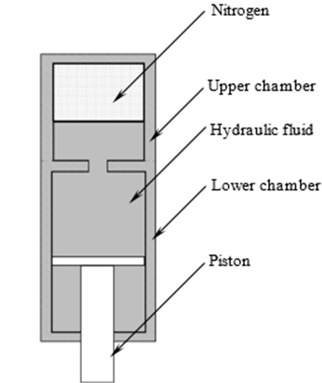 Image source: researchgate.net |
· Components of a typical landing gear
| Actuating cylinders | Retract and extend the gear |
| Axles | Cylindrical parts carrying the wheels |
| Bogie beams | Longitudinal shafts carrying wheel axles |
| Drag link / Strut assembly | Absorbs longitudinal forces caused by braking |
| Side struts | Absorb lateral forces |
| Shock absorber | Absorb forces during landing. Filled with hydraulic fluid and nitrogen. Oil supplies the damping function. Nitrogen supplies the spring function. |
| Steering actuator | Transmits steering orders to the leg |
| Torque / Torsion link | Prevents rotation between the leg and the shock absorber |
| Locks | When retracted, gear is locked by hydraulic hooks. When extended, gear is locked by the alignment of side struts (known as overcentre locking mechanism) |
| Gear doors | Controlled hydraulically |
· Landing-gear position indication and alerting
| 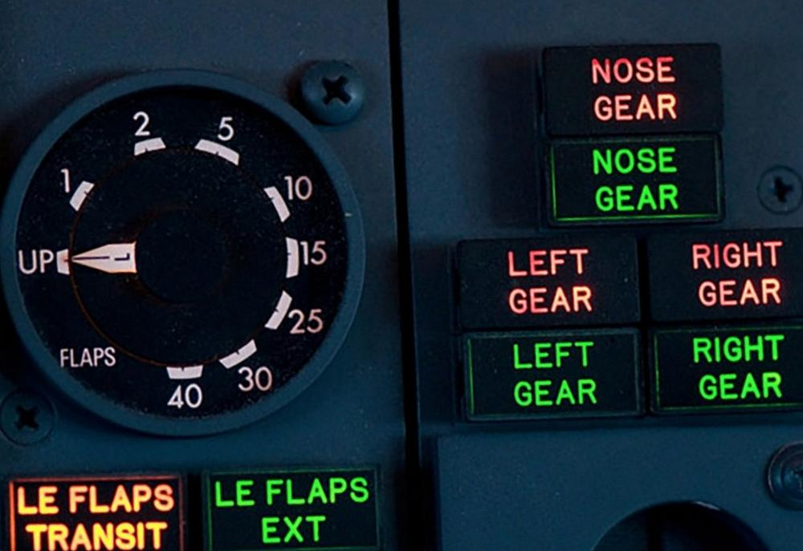 Image source: rightattitudes.com |
· Protection devices to avoid inadvertent gear retraction on the ground
- Ground lock (pins), physically inserted into the landing gear, which impede retraction.
- Electrical locking mechanism, generally fed by weight on wheels, which impedes gear lever movement to the up position.
EMERGENCY GEAR OPERATION
· Sequence for emergency gear extension generally involves three steps
- Unlocking the landing gear
- Moving the landing gear towards the extended position. This can be achieved via
- Gravity / free fall
- Air or nitrogen pressure
- Manually / mechanically
- Downlocking the landing gear for a safe landing
BRAKES
· Function: reduce the speed of the aircraft, by converting kinetic energy into heat energy.
· Classification according to amount of discs
| 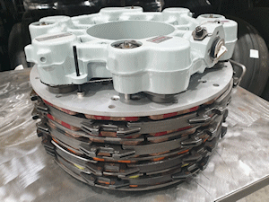Image source: rotablerepairs.com |
· Disc materials
- Steel used in the old days, but nowadays has been replaced by other solutions.
- Carbon and carbon fiber are generally used in modern transport category aircraft.
- Advantages: lighter, absorbs more energy than steel and insensitive to thermal shock
- Disadvantages: expensive, prone to wear if temperature is too low or intermittent braking is applied, and can be damaged with anti-ice fluid
· Brake terminology
- Brake drag. Happens if disc plates are not properly separated, creating undesired friction (and drag) when braking is not required.
- Brake fade. When temperature is excessively high, brakes lose effectiveness.
- Brake overheat. Fire hazard. Tyre risks explosion.
- Brake failure. This will cause runway excursions and loss of control.
- Brake fire
- In case of brake fire, never use water. It can lead to rim burst.
- Wheels must never be approached from the side since debris from a potential explosion can be harmful.
· Brake accumulator.
- Usually works at 3000 psi.
- It serves as an emergency reservoir, allowing for 6-7 brake applications to stop the aircraft in case of emergency.
· Parking brake
- Generally fed by accumulator pressure, it ensures that aircraft is stopped while on the ground.
- Wear can be measured by a mechanical gauge while parking brake is set (or brakes are pressed in small aircraft)
· Anti-skid system.
- A system that prevents the wheels from locking up if too much pressure is applied on the brakes.
- Advantages: Ensures maximum braking efficiency, reducing landing run, improving control and tyre life.
- Use of anti-skid is critical on contaminated or slippery runways. In fact, landing is prohibited without anti-skid in these situations.
- Protections
- Touchdown protection: before touchdown, all wheels have an artificial skid signal to prevent any undesired rotation.
- Fail-safe protection. If anti-skid systems fails, braking system will return to full manual.
- Slip ratio = (Nose LG speed - Main LG speed) / Nose LG speed * 100
· Autobrake system
- It allows the aircraft to decelerate at a desired and preset deceleration rate.
- This deceleration rate is independent of the usage of reverses. Using reverses will only decrease the pressure on the disc plates, but it will not increase the decel-rate.
- Prerequisites:
- Hydraulic pressure
- Select desired braking setting
- Anti-skid on and serviceable
- Spoilers armed
- Idle throttle setting and no manual braking
- Disengage triggers
- Auto-skid turned off
- Throttle moved forward or spoilers retracted
- Manual braking
WHEELS
· Wheel layouts
| 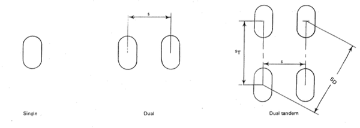Wheel arrangements, from ICAO Doc 9157, Part 3, Appendix 1 |
· Wheel types
- Well-base wheel
- Detachable Flange Wheel
- Split Hub Wheel (attached by bolts)
- Twin Tyre Split Hub Wheel
· Fusible plugs
- A safety measure installed at the wheel rims, designed to melt if temperature increases too much
- Tyre will deflate, preventing an explosion
TYRES
· They withstand landing impact loads, high speeds and high temperatures.
· Tyre regions:
| 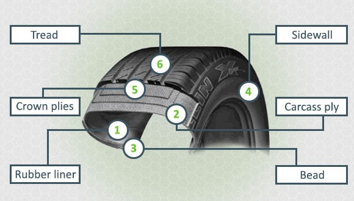 Image source: americantiredistributors.medium.com |
· Tyre types
- Tubed tire
- Tubeless tire: less change of deflation, less weight, cooler operation.
· Tyre terminology
| 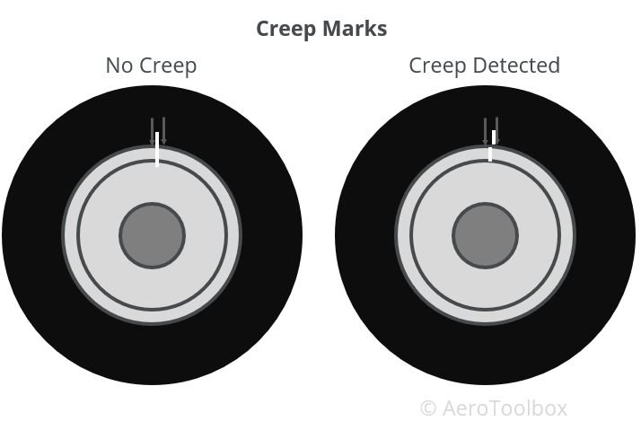Image source: aerotoolbox.com |
· Tyre balance
- Red dots marks the light spot of a tyre, usually where the inflation valve is.
- Markings are printed on the tyre and indicate part number, date of manufacture, tyre type, speed rating, ply rating and type and number of retreads.
· Tyre treading
| 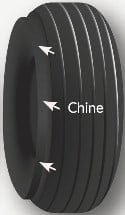Image source: aviationhunt.com |
· Tyre wear
| 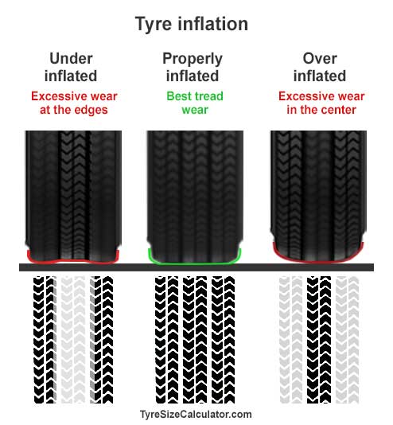 |
4. Air conditioning, pneumatics, pressurization
AIR CONDITIONING SYSTEM
· Purposes of air conditioning system:
- Ventilation
- Temperature control
- Humidity and pollution control
· Engine exhaust heating
- Ram air is conducted around exhaust gas duct, exchanging heat.
- The amount of heated air can be regulated. It goes into windshield de-mist outlets, passenger heater outlets and cockpit heating outlets.
· Combustion heating
- Air is conducted around a heated combustion chamber, which uses air and fuel.
- Temperature can be regulated by changing the amount of fuel burnt.
· Cabin supercharger or blower.
- Found on turboprops, turbojets or large piston engine aircraft.
- They use a compressor which may be driven by exhaust gases.
· PACKS
- Generally used in modern transport category aircraft
- Cool bleed air is mixed with hot "trim" air and delivered into different sections of the cabin, allowing for temperature regulation
PNEUMATIC SYSTEM
· Bleed air system
- Consists of pressurized air coming the engine(s)
- Air can be obtained from either Low Pressure (LP) or High Pressure (HP) stages, depending on engine RPM.
- At low RPMs, air is drawn from the High Pressure compressor since LP stage doesn't provide enough pressure and quantity
- During cruise, air from Low Pressure compressor is enough for bleed air consumers
- Typically, bleed air is around 175ºC and 50 psi
- Generally includes two main valves:
- Engine bleed air valve (in the engine), controls bleed air output
- Isolation valve, allows bleed from an engine on one side to feed consumers on the opposite side
· The bootstrap system
- Bleed air goes through a compressor first
- Then, it's cooled down via a heat exchanger
- Air then goes through a turbine which cools it down even more
- When air is finally decompressed, it is around 2ºC and 20 psi.
- Cold air is mixed with bypassed hot air to prevent ice formation if temperature gets excessively low.
- Ram air is used to cool the air at the heat exchanger. This is the most effective part of the system.
- Water separator is used to control the humidity of the air.
· Brake Turbine System
- Bleed air is cooled down with ram air and then decompressed
- Turbine is linked to a compressor to increase Ram Air efficiency and load of the turbine
· Turbo fan system
- A fan is used to suck air and increase the load of the turbine.
· Re-circulation system
- Above 50% of cabin air is recirculated to reduce load of the engines.
- Flight deck doesn't receive recirculated air; only pure pack air
- Air from re-circulation fan and packs is mixed in mix manifold, and fed into the sidewall risers.
PRESSURIZATION
· Cabin pressurization
- Pressurization provided by PACKS (Pressurization and Air Conditioning Kits) that provide bleed air at an adequate pressure to the cabin
- An outflow valve controls the amount of air leaving the cabin.
- If the outflow valve is closed, the cabin is filled with bleed air, thus reducing "cabin altitude"
- If the outflow valve is opened, cabin air is drawn overboard by differential pressure, thus increasing "cabin altitude". If uncontrolled, this can turn the cabin unbreathable.
- Maximum cabin altitude is generally limited to 8000 ft during normal flight.
- Maximum typical differential pressure limit is around 8 psi
· Safety mechanisms
- Aircraft are required to have at least two safety outflow valves that open automatically if cabin differential pressure is exceeded
- An inward relief valve (or negative pressure relief system) opens if outside pressure is bigger than inside pressure.
- A damp valve can be fitted, and allows pilots to quickly reduce pressure differential to zero.
· Pressurization scenarios
- Unpressurized: The cabin maintains the same altitude as outside air. Outflow valves are fully open.
- Isobaric control (constant pressure). Cabin altitude stays constant during level cruise.
- Proportional control. Cabin pressure increases or decreases proportional to aircraft altitude. Used during climbs and descents.
5. Ice protection
ICE DETECTION
· Two main types of ice detection systems
- Inferential (not in the syllabus)
- Accretion (they work based on the build-up of ice)
- Visual
- Hot rod. A stick is projected into the airflow, prone to icing. It's called hot rod because it's heated.
- Smiths Ice Detector. It's a tube with several holes placed on it. When holes are blocked by ice, pressure differential of the sensors is reduced.
- Electric vibrator. Vibrates at around 50.000 Hz. When ice forms, rate changes.
ICE PROTECTION
· Mechanical de-icing
- Expanding rubber boots
- Rubber boots located at the leading edge of the wing
- They are inflated by pneumatic air from the engines, then deflated
- By deforming the leading edge, ice blocks are destroyed and thrown off by impact air
- Used in turboprops
· Heat
- Can be provided by electricity or bleed air
- Bleed air generally used for leading edge anti-ice, or engine intake anti-ice
- Electricity generally used for pitot, probes and sometimes propeller protection
- Wing anti-ice can't be activated on the ground.
- It also has a security valve that prevents hot air from overheating the structure (overheating an structure where tons of fuel are stored is not a good idea)
· Liquid protection
- Liquid, stored in a reservoir, is spread on the leading edge of aircraft wings
- It melts existing ice and prevents the formation of any ice crystals.
- This is known as a wet wing system
- Liquid can also be used on propellers. Liquid is sprayed from the propeller's crank cone, and centrifugal forces spread the liquid to the propeller blades.
- Generally only used in light GA aircraft.
WINDSHIELDS
· Ice protection
- Fluids
- Electrical heating constantly used on transport category aircraft
· Rain protection
- Coating
- Rain repellent fluid. Promotes the growth of water droplets, so they are big enough to be washed out by the airflow.
- Wipers and washes. Might have speed limitations.
6. Flight Controls
· Classification of flight controls
- Primary flight controls. Used to manoeuvre (pitch, roll and yaw)
- Secondary flight controls. Used to adjust lift, drag and trim.
PRIMARY FLIGHT CONTROLS
· Primary Flight Controls
- Elevators
- Rudder. Rudder movement can be limited at high speeds by:
- Rudder Ratio Changer limits rudder deflection at high airspeeds, but maintains pedal movement range.
- Variable Stop type limits both pedal and rudder detection.
- Ailerons and roll spoilers.
- Asymmetric deflection creates adverse yaw, which can be compensated by
- Differential ailerons
- Frise ailerons
- Spoilers on the downgoing wing
- Rudder coupling
- At high speed, only inboard ailerons are used to prevent excessive roll moment and structural overload.
- Asymmetric deflection creates adverse yaw, which can be compensated by
· Movement of control surfaces can be achieved
- Mechanically. This system is reversible and provides force feedback.
- Hydraulically
- Partially powered. The hydraulic system is an aid. It provides feedback and it's reversible.
- Fully powered. No feedback, irreversible.
- Fly-by-wire. Pilot's input is sent electrically to the control surface via a computer. No feedback, irreversible.
· Cable system
- "Fairleads" are used to prevent chafing of the cables against metal.
- Cable operation requires some tension. If tension is too high, risk of breaking. If tension is too low, lack of effectiveness.
- Tension is adjusted by means of turnbuckles and measured with a tensiometer.
- Cables are compensated for temperature difference which could change cable's tension.
· Flight control stops (limits)
- Primary. Limits are in control surfaces themselves.
- Secondary. Used as a backup. Limits are related to the control column.
· At high speeds, the deflection of the flight controls is reduced (usually by secondary limit)
· Hydraulic system
- Two actuators minimum are used in each flight control surface for redundancy
- If an actuator fails, it can either be disconnected mechanically or relieve the pressure so the control surface is free to be moved by the other actuator.
- In order to not overstress the aircraft, a parallel artificial feedback is provided.
· Artificial feel system
- Spring feel unit: Not sensitive to speed
- Basic Q feel unit: Works with dynamic pressure
- Hydraulic Q feel unit. Same as basic, but the strength opposing the deflection is increased even more.
· Safety features
- Jam override mechanism. If a yoke or control column is locked, the other one must be able to take over.
- Sidestick priority/take-over pushbutton. If a sidestick is failed, the other pilot may take-over and deactivate the faulty sidestick to ensure ability to fly the airplane.
FLY BY WIRE (FBW)
· Principle of a fly-by-wire system
- Pilot input is electrically sent to a computer
- The computer processes the input against the aircraft attitude, and it decides how much deflection to execute on the controls.
- Feedback from the aircraft response is sent to computer, which then fine-adjusts the deflection.
· Note that pilot control column / stick has no mechanical connection to the flight control panel. As a consequence:
- Fly-by-wire systems are always irreversible.
- It should always have an artificial feel system associated with it, or alternative means of protection against overstressing the aircraft.
· Components of a fly-by-wire control system
- Pilot's input command
- Electrical signalling
- Pilot input to computer
- Computer to flight control surfaces
- Feedback from aircraft response to computer
- Flight control computers
- Actuators
- Control surfaces
· Advantages of fly-by-wire
- Less weight, less maintenance and less fuel consumption
- Permits flight envelope protection
- Reduced workload
- Manoeuvre load alleviation
· Fly-by-wire systems are fitted with several laws that the aircraft uses in case of system degradation.
- Normal law
- Alternate law
- Direct law
- Mechanical backup (usually using throttle, trim and rudder, therefore, not using FBW)
SECONDARY FLIGHT CONTROLS
· Flaps and slats
- Operated hydraulically, electrically or manually
- In modern aircraft, if pilot is overspeeding the flaps, they are automatically retracted
· Speedbrakes / Ground spoilers
- Used in-flight to increase drag and decrease lift
- Conditions for ground spoilers deployment: armed, weight on wheels, throttle idle
- When used on the ground, they are known as lift dampers.
· Trim system
- Used to maintain attitude and reduce stick forces to zero
7. Fuel System
INTRODUCTION
· Functions of the fuel system
- Feed the engines (including APU)
- Transfer fuel to adjust CG
- Act as a coolant for some components
- Act as a hydraulic fluid for some actions
· Ideal fuel requirements
- High calorific value
- Complete combustion under all conditions
- Ease of flow
- Non-corrosive
- Low fire hazard
- Good lubricating characteristics
· Main types of fuel used
- AVGAS (For general aviation)
- AVGAS 80 - Red
- AVGAS 82 - Purple
- AVGAS 100 - Green
- AVGAS 100LL - BLue
- AVTUR (For TURbines)
- JET-A, JET-A1 and JET-B
- Differences between each are the working temperatures and civil/military usage
· Effect of temperature
- Low temperature leads to an increase in viscosity and wax formation, which could cause filter blockage
- Can be corrected with reduced altitude or increasing speed
- High temperature: the boiling point of fluids reduces with altitude, which could lead to boiling, and, ultimately, vapour lock.
- Can be corrected by partially pressurizing the tanks and pumps.
FUEL CONTAMINATION
· Fuel sampling
- AVGAS. Use a water drain to get a sample, since water stays below the fuel.
- AVTUR. Chemical detectors
· Recommended practices to minimize water accretion
- Top off tanks to full overnight
- Have fuel/oil heat exchangers to prevent ice
- Use fuel system icing inhibitors
FUEL STORAGE
· Fuel tank types
- Rigid. Simple, needs space and adds weight.
- Flexible. Lighter. Needs a supporting structure, and some fuel can be stuck in the irregularities of the bottom.
- Integral. Uses the wing structure to store the fuel. Used in modern aircraft. Less weight penalties. Optimization of available space. Possibility of leaks.
· Tank components
- Water drain
- Stack pipe to prevent the lower contaminated fuel to enter the system.
- Vent
- Baffles to damp fuel fluctuations (movement) during manoeuvres.
· Vent system
- Provides ram pressure from outside air, preventing cavitation
- Increases the boiling point of the fluid
- Large aircraft have a vent-surge tank (2% of wing tank). Air -> surge tank-> fuel tank
FUEL DISTRIBUTION
· Typical fuel systems according to aircraft type
- Gravity feed system (high-wing SEP). Positions: Off, left, right, both
- Pressure system (low-wing SEP). Off, left, right
- Pressure system (MEP). Off, on, cross-feed
- Pressure system (Large aircraft).
- Note: for ETOPS approved aircraft, pumps, x-feed valves, etc, are doubled
· Cross-feed system
- Mandatory on large aircraft
- Two independent systems: one for each engine (assuming a two engine aircraft)
- Allows both engines to use fuel from the same tanks
- Note: cross-feed system doesn't transfer fuel from one tank to the other
· Booster pumps (LP)
- Centrifugal type, electrically driven 115V AC. Usually low pressure
- Covered in fuel for cooling purposes
- Feeder box used to ensure that the booster pumps are immersed in fuel at all times.
- Used to prevent cavitation and to help create high pressure.
· Scavenge pumps
- Used to move fuel inside the tank or from tank to tank
- Uses a Venturi to suck the fluid
MONITORING AND CONTROL
· Indications in the cockpit
- Fuel quantity and temperature gauges
- Fuel flow gauges
- Status of the components and valves position
- Pump output pressure
· Fuel quantity measurement
- Power off: Mechanical float, dipstick, drip-stick, dropstick.
- Power on:
- Resistive measurement (volume), measured by changing the position of a float
- Capacitive measurement (mass), corrected for manoeuvres and temperature variations
REFUELING & JETTISON
· Refueling methods
- Open line, similar to car refueling (used in light aircraft)
- Pressure line. Positive pressure is provided by pumps and fuel "climbs" up to the wing (used in large aircraft)
· Fuel jettison
- Mandatory unless the aircraft satisfies one engine-out climb requirements and is prepared for an overweight landing.
- Jettison must be shutdown automatically when the fuel reaches a safety level.
- Safety level: the necessary to climb from 0 to 10.000 ft and stay there for 45 min at speed of maximum range.
8. Oxygen system
· Two main methods of maintaining enough O2 absorption
- Increasing the percentage of O2 in the air (remember it's around 21% in the atmosphere)
- Increasing O2 pressure
FIXED COCKPIT OXYGEN
· Fixed cockpit oxygen system
| 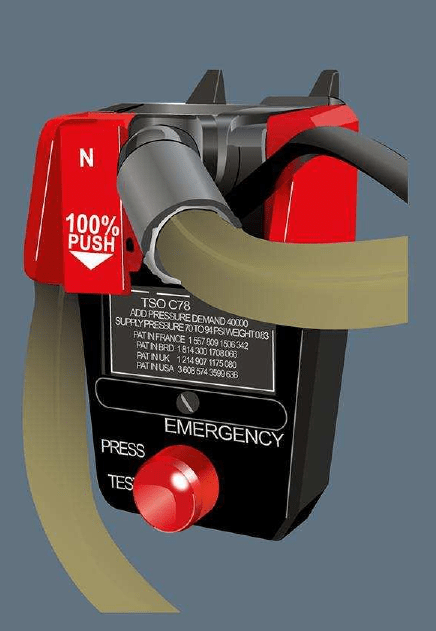Cockpit oxygen mask flow selector |
FIXED CABIN OXYGEN
· Cabin fixed oxygen system is a continuous flow system.
| 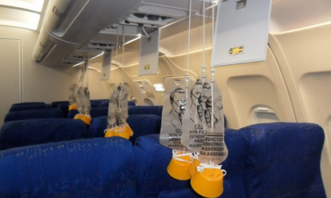Image source: fantasticfacts.net |
PORTABLE OXYGEN
· Portable oxygen bottles
| 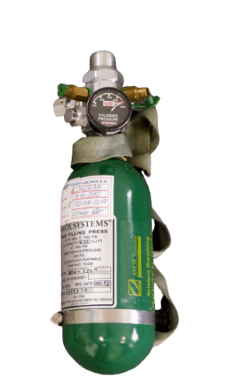 |
· Protective Breathing Equipment (Smoke hoods)
|
9. Fire protection
INTRODUCTION
· Fire protection and extinguishing systems must be located in:
- Engine compartments
- APU comparmtnets
- Cargo compartments
- Wheel wells
SMOKE DETECTION
· Types of smoke detection sensors
- Optical (labyrinth) detector.
- A light source is aimed at an angle away from a sensor.
- As smoke enters the chamber, the light is scattered and reflected into the photoelectric sensor, triggering an alarm.
- Ionization detector.
- Works by ionising the air between two electrodes, creating a small current inside the chamber of the detector.
- When a fire occurs, smoke enters the ionisation chamber.
- When smoke enters the chamber, it disrupts the flow of ions, thus reducing the flow of current and activating the alarm.
- Commonly used inside the lavatories.
· General protection
- Cargo compartment. If fire is detected, ventilation is stopped and an agent can be discharged.
- Lavatories' bins have overheat detectors that automatically deploy an extinguishing agent.
· Areas generally fitted with smoke detectors
- Cabin and toilets
- Crew rest compartment
- Avionics bay
- Cargo compartment
FIRE DETECTION
· There are several ways to detect a fire, including:
- Direct observation
- Overheat detectors
- Smoke detectors
- Fiberoptic detectors
- Thermal imaging devices
- Radiation sensing devices
- Ultraviolet aircraft fire detection systems
- Detecton of combustion gases like CO or CO2
· Melting link detectors
| 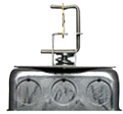 |
· Differential expansion detectors
| 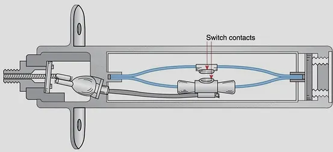 |
· Continuous Fire Detectors (Firewires Free From False Detection).
- Types
- Resistive: A semi-conductor that, when heated up, acts as a conductor
- Capacitive: The capacitance of a capacitor increases with temperature, allowing current to flow
- In both cases, once the fire is gone, the alarm is ceased.
- Generally used around engine fire zones.
· Gas filled detectors
- A tube containing a core gas absorbent material.
- When the tube is heated up, pressure in the tube increases.
- The increase of pressure is sensed by a pressure switch which triggers a fire alarm.
- Has the ability to detect hot gas leaks from bleed supply.
· Double loop detection redundancy
- Two loops of fire detectors are placed at fire-critical areas.
- In normal operation, both loops must detect a fire independently for an alarm to be triggered.
- If a single loop fails, fire detection is still available through the remaining operative loop.
FIRE PROTECTION
FIRE EXTINGUISHING
· When pushing an engine fire button:
· Generally, at least two shots of extinguishing agent are available for each single engine (1 for the APU)
| 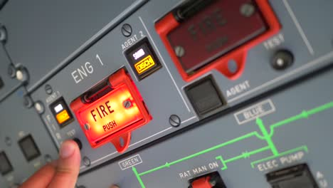 |
· The main fire extinguishing agent used in aviation is called "Halon".
FIREWALLS
· Firewalls of titanium are located between engine and pylons. They act as barriers.